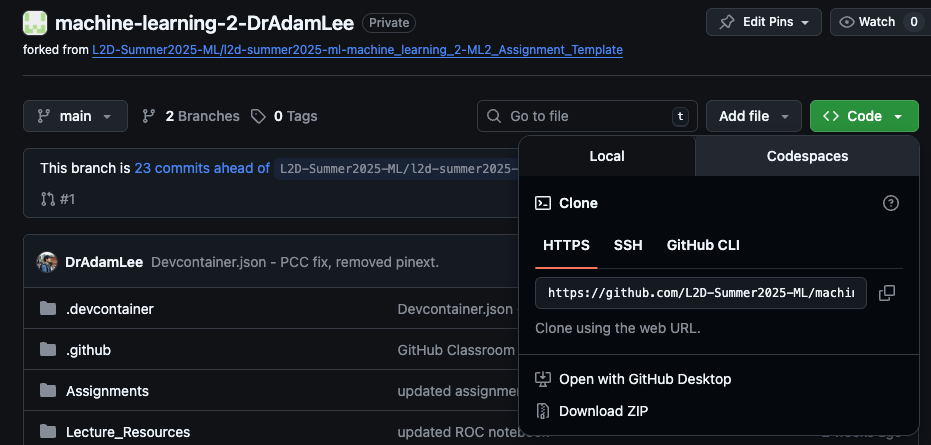
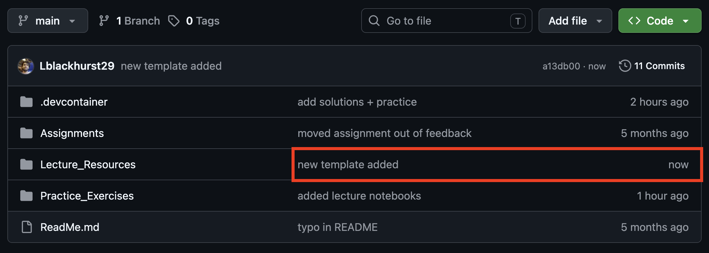

Learning Objectives
Introduction
Git is a version control system that tracks changes in your files over time, creating a detailed history of every modification you make to your project. Whilst Git can work with anything text-based, it works especially well for coding projects where there are continuous updates to varying parts, typically non-linear.
Git is a distributed system, meaning that every copy of a Git repository contains the complete history of all the files. This means every contributor has a full backup of the entire project history, decreasing the likelihood of losing your code and making collaboration easier.
A repository (often shortened to repo) is the Git name for the folder containing your whole project. In this folder there will be a .git/ folder that contains all the metadata to track and configure your project/repository.
This course has been setup to use Github CodeSpaces (see section Course setup). This doesn't require you to install Git yourself if you want to submit your work through Codespaces, but you will have to use some of GitHubs features.
Git vs GitHub
This distinction often confuses beginners:
- Git is the tool: the version control software that runs on your computer and tracks changes
- GitHub is a hosting service: a website that stores your Git repositories online, making them accessible from anywhere and enabling collaboration
GitHub is the go-to service for storing and collaborating on code, used throughout business and academia. We will explore it further in the next section.
Why Scientists Need Git
Git and GitHub address many critical needs of researchers:
- Backup: Your work is automatically backed up across multiple locations
- Collaboration: Multiple researchers can work on the same codebase without overwriting each other's work
- Centralisation: All your lab's code can be stored in one place. When people leave you can be sure you will still have access to their work, and likewise you can point new members to it for easy access
- Publishing: Many journals now require code availability, and Git repositories provide a professional way to share your work
If you and your lab are beginning to use more code, we recommend you create a lab organisation at GitHub, using this space to share and save your labs work.
Installing Git
With GitHub CodeSpaces, Git is already installed in the web-based VSCode, allowing you to push back your changes to your lesson repository. If you would just like to work this way then you can ignore this section.
However, if you want to install it on your local computer then visit git-scm.com and download the appropriate version for your operating system. The website will automatically detect your OS and suggest the correct download, which will walk you through installation.
Verification
After installation, open your terminal or command prompt and type:
git --version
>> git version 2.53.0You should see output showing the Git version number (as shown above), confirming the installation was successful.
Initial Configuration
Before using Git, you'll need to set up your identity:
git config --global user.name "Your Name"
git config --global user.email "your.email@example.com"Use the same email from your GitHub account.
Basics
The Git workflow follows a common pattern that you'll use repeatedly.
1. Cloning
Cloning is the process of downloading a complete copy of a Git repository from a remote location (like GitHub) to your local computer. This creates an identical copy of the project, including all files, folders, and the entire version history (the metadata).
All git commands are entered in the terminal and work in place, i.e., they will clone or look for information in the folder you are currently in.
The standard clone command is:
git clone https://github.com/user/repository-name.gitWhen you want to clone a repository from GitHub it will give you two options, HTTPS and SSH. Clicking either will give you a link that you copy and paste into your terminal after git clone; both are a unique identifier of the stored repository you are interested in. If the repository is private then you will need to have your computers Git authenticated with GitHub to execute the clone, see Course setup for how to do this.
Both can be found on the repository's GitHub page, just click the green Code box for the dropdown:

When you run the clone command, as well as downloading the files it will set up a connection to the remote repository which will be called the "origin". You local clone of the folder will track any changes so that they can be added back to the "origin".
Once cloned you'll need to navigate into the newly created folder:
cd repository-nameYou're now inside your local copy of the repository and can begin working with the files.
2. Pull
When working with remotely stored files, it's good practice to keep your local copy up to date with the centralised copy. We do this with the git pull command, which downloads the latest changes from the remote repository and incorporates them into your local copy.
The standard pull command is:
git pull origin mainwhich is often shortened to:
git pullAs Git assumes you want to pull from the original tracked remote branch (typically
origin/main for newer repositories or origin/master for older ones).You will find yourself using
pull every time you start work, to make sure you are up to date with any possible changes. It's a good habit to get into.What happens during a pull?
When you run git pull, Git attempts to automatically merge the remote changes with your local work. If you have uncommitted local changes that don't conflict with the incoming changes, Git will usually merge them successfully. However, if both you and someone else have modified the same lines of code, you'll encounter a merge conflict that requires manual resolution.
Merge: The process of combining the changes in two linked repositories, to result in a singular repository with all the new edits.
Conflict: When two linked repositories are attempted to be merged, but both have changes to same lines of code; this will cause a conflict. This is because Git does not know which one version is the right one, as both are new updates from the same original code.
3. Add
When we are happy with our changes to the code or just at the end of a working session, we will want to update the remote repository with the new code. For this we use the git add command to stage files for commit, which means you're preparing specific changes to be saved to your project. Git has a two-step process: first you stage changes with add, then you save them with commit.
To stage all changes in your current directory, you add a . after add:
git add .To stage a specific folder or file you add it explicitly:
git add your_file.pyWhy use selective staging?
The difference between these approaches becomes important when creating focused commits. Imagine you're working on a data analysis project and you've modified three files:
data_cleaning.py(fixed a bug in data preprocessing)visualisation.py(added new plotting functions)analysis.py(started experimenting with a new statistical method)
Rather than committing all changes together with git add ., you might want to:
git add data_cleaning.pyand commit with message "Fix bug in data preprocessing"git add visualisation.pyand commit with message "Add new plotting functions for correlation analysis"- Leave
analysis.pyunstaged until the experimental work is complete
This approach creates a cleaner project history where each commit represents one logical change, making it easier to:
- Track down when specific features were added
- Revert individual changes without affecting other work
- Understand what each collaborator contributed
- Write meaningful commit messages that accurately describe the changes
4. Commit Message
Every staged change, ready to be sent to the remote repository, must be accompanied by a commit message. This should be a description of what the changes were for and becomes part of the permanent record. Try not to be vague as you may regret this when something goes wrong.
The basic commit command with a message:
git commit -m "Your descriptive message"5. Push
Now that the changes are staged and properly described, we can push them back to the remote repository. To do this, we use the git push command.
The standard push command is:
git pushOnce pushed, the remote repository on GitHub will be updated with your latest changes. This can be checked visually by clicking on the repository in GitHub. Here you should see your commit message next to any folders that you have edited, alongside a time stamp of how long a go the commit was.
See below for a commit that has only happened moments before with the commit message "new template added":

All together
The flow of add, commit, and push are typically done at the same time, sequentially. You should find yourself doing this when:
- Completing a logical unit of work
- At the end of working sessions
- Before switching computers
1.
After setting up Git and connecting it to your Github, go to the latest lesson repository released to you and clone it to your local computer.
- In the Lecture_Resources folder open a blank jupyter notebook and write out some quick code or text.
- Save the changes and go through the git workflow:
git add .git commit -m "testing out github"git push
Collaboration and File Changes
One of Git's most powerful features is enabling multiple people to work on the same files whilst preserving everyone's contributions and maintaining a clear record of who changed what.
How multiple people can modify the same file
When multiple researchers work on the same project, they each have their own local copy of the repository. Here's how Git handles collaborative changes:
- Each person clones the repository to their local machine
- They work independently on their local copies, making changes to files
- They commit and push their changes to the shared remote repository
- Others pull these changes to stay up to date
git log --onelineThis shows a chronological list of commits with their messages and authors.
Branching
Having many people working on one version of a repository will often cause conflicts when it is time to merge. A remedy to this is for a branch to be made off of the main repository. This branch will be a clone of the original branch, however now with its own, isolated, tracking history. From here changes can be made for a specific task, say adding a new analytical tool, which can then be merged back into main.
This way multiple people can work on their siloed upgrade without interfering with the others work.
Basic branch command workflow:
git branch branch-name # Create a new branch
git switch branch-name # Switch to that branch
# Or create and switch in one step:
git switch -c branch-nameOnce you have finished you can merge the branch back to main:
# Many edits, pushes and pulls later...
git switch main # Switch back to main before merging
git merge branch-name # Merge branch back to mainNote: You will often see git checkout branch-name used in older tutorials — this does the same thing as git switch, but git switch is the modern, recommended command since Git 2.23.
Common errors
Authentication issues
As mentioned, Git is now often connected to a remote online web service, GitHub. To do so you must authenticate your Git with your GitHub account. Head to the connecting to GitHub section in Course setup to see how it is done.
If you are working with CodeSpaces, this is not needed as your are already within the GitHub ecosystem!
Merge conflicts
Merge conflicts occur when the same lines in a file have been changed differently in your local copy and the remote repository. Git cannot automatically determine which version to keep.
Understanding what git pull does during conflicts
When you encounter a merge conflict and run git pull origin main, this command does not automatically overwrite your local changes. Instead, it:
- Downloads the latest changes from the remote repository
- Attempts to merge them with your local changes
- If conflicts exist, it marks the conflicted sections in your files
- Leaves both versions in the file for you to manually resolve
When Git encounters conflicts, it modifies your files to show both versions:
<<<<<<< HEAD
Your local changes here
=======
Remote repository changes here
>>>>>>> origin/mainYou must manually edit the file to choose which changes to keep (or combine them), remove the conflict markers (
<<<<<<<, =======, >>>>>>>), then stage and commit the resolved file.See Course setup for what to when a merge conflict occurs during submission of your assignment.